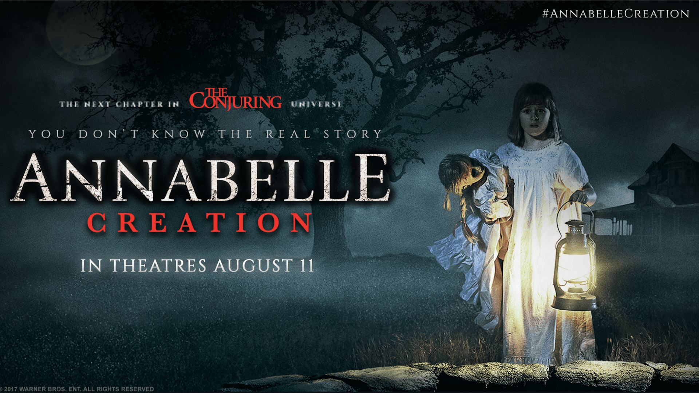
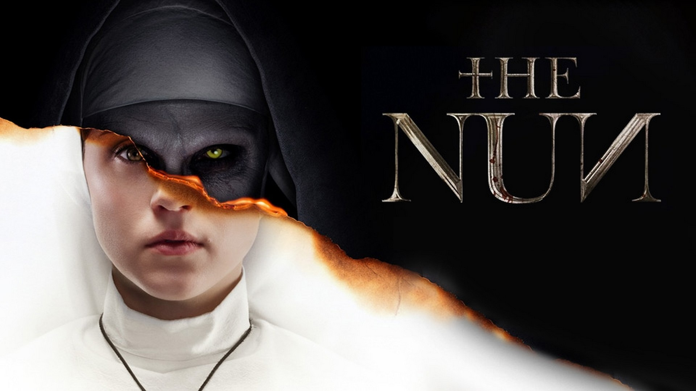

1 / 3

Annabelle Creation
2 / 3

The Nun
3 / 3

Hereditary

Aster’s vision for Hereditary was inspired by a few horror staples including Carrie (1976) and Rosemary’s Baby (1968). But there was another, more obscure source he drew from when crafting his movie. For those who are unfamiliar with Peter Greenaway's The Cook, the Thief, His Wife and Her Lover, the 1989 film starring Helen Mirren and Michael Gambon, it centers on a woman having an affair with a man at her abusive husband’s restaurant.
Read more
The first film in the “Conjuring”-verse is mostly an actual, reported event, if you believe in that sort of thing. As demonstrated with photos during the end credits of the movie, the Perron family really did exist, and reported they were being attacked by some kind of entity. The Warrens did, in fact, investigate. Both Lorraine Warren and the Perron family signed off on the movie as well (Ed died in 2006).
Read moreHe might not have wanted to be in the makeup chair for hours, but Tim Curry dedicated himself to the role in other ways. Most people think Pennywise’s wild puffs of red hair were a wig. But it was actually Tim Curry’s real hair, which he grew out for the role and then had teased and frizzed up every single day.
Read moreThe Ring is about a single spooky, cursed movie and Sinister is about a box o’ spooky, cursed movies. The similarity there isn’t coincidental. After watching The Ring, co-writer C. Robert Cargill, had a dream about going into his attic and finding a bunch of films that had the same kind of grizzly murder footage on them as the home movies that show up in Sinister. In fact, that dream was turned into the movie’s opening shot.
Read more